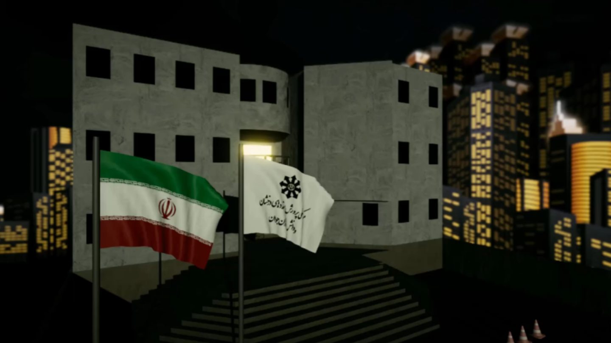

Night At School
Night At School is part of the II Games Studio project archive.
3D
This is an archived, hidden project page.

Play Night At School
Choose a platform below for the game and available downloads.
No public download is available on this page.
This hidden project page is kept in the archive.